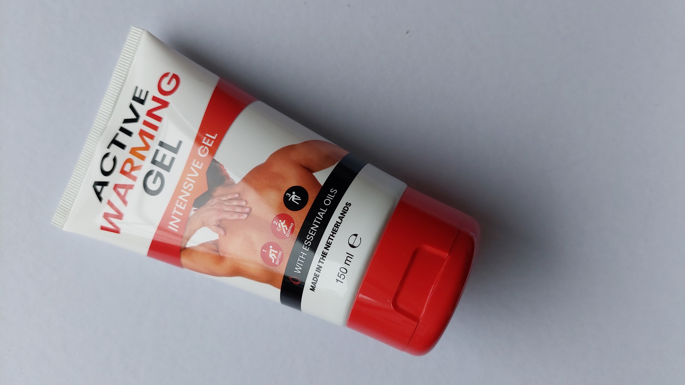

Er zijn veel gevolgen van overgewicht waaronder.
Ziektes/klachten
Overgewicht vergroot de kans op ziektes zoals diabetes 2 ook wel suikerziekte genoemd. Suikerziekte is een ziekte waarbij je lichaam zijn eigen bloedsuiker niet in evenwicht kan houden omdat je lichaam te weinig van het hormoon insuline heeft. Insuline zorgt ervoor dat het bloedsuiker in evenwicht wordt gehouden. Andere ziektes zijn een hoog bloedruk, dit verhoogt je kans op een hartinfarct of een beroerte. Je kan ook hart en vaatziektes krijgen die ervoor zorgen dat je een vergrootte kans krijgt op hartkramp, hartinfarct, beroerte en etalagebenen. En kunt u ook galstenen krijgen. Dit komt omdat er bij overgewicht de galblaas minder beweegt en de gal veel cholesterol bevat waardoor he dus sneller galstenen krijgt. Er is ook kans op een verminderde slaapkwaliteit en slaapapneu. Dit betekend dat je vaak stopt ademen in je slaap. Rug- en gewrichtsklachten komen ook vaak voor bij mensen met overgewicht. Dit komt omdat de onderrug wordt belast en die dan snel verslijt. Dit zorgt voor stijfheid in het gewricht en zwelling. Tot slot vergroot overgewicht je kans op bepaalde soorten kanker zoals bijv. alvleesklierkanker, baarmoederkanker, borstkanker, darmkanker enzovoort. 
Mentale problemen
Mensen met overgewicht hebben ook een anderhalf keer zoveel kans om depressief te worden en een verhoogde kans op angststoornissen. Hetzelfde geld ook andersom. Mensen met depressie hebben anderhalf keer de kans meer om overgewicht te krijgen vergeleken met mensen zonder depressie.